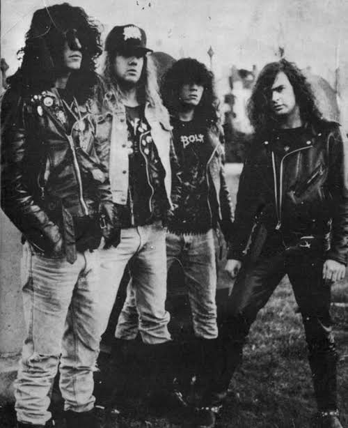
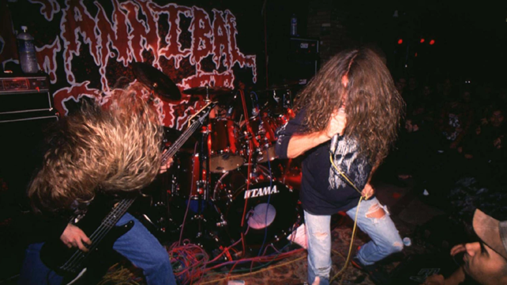

Overview
Groove metal (also known as neo-thrash or post-thrash) is a subgenre of heavy metal music that began in the early 1990s. The genre is primarily derived from thrash metal, but played in slower tempos, and making use of rhythmic guitar parts. It was pioneered in the late 1980s by groups like Exhorder, Prong and Bad Brains, and then popularized by the commercial success of Pantera, White Zombie, Machine Head and Sepultura in the early to mid-1990s. The genre went on to be influential in the development of the new wave of American heavy metal, nu metal and metalcore. It continued to gain traction in the 2000s with Lamb of God, DevilDriver and Five Finger Death Punch, and the 2010s with Killer Be Killed and Bad Wolves.
History

In their book Hellraisers: A Complete Visual History of Heavy Metal Mayhem, journalists Axl Rosenberg and Christopher Krovatin traced the origins of groove metal to New Orleans' Exhorder and New York's Prong. Exhorder, formed in 1985, recorded their first demo in the summer of 1986, playing a style that was influenced by hardcore punk and metal, as well as jazz, funk, blues, and the music of Mardi Gras. The band were immediately influential in the New Orleans metal scene, with pioneering sludge metal bands Eyehategod, Soilent Green, and Crowbar all playing some of their earliest live performances in support of them. Prong, on the other hand, originated from the New York hardcore scene. The band originally played crossover thrash before slowing their tempos and incorporating heavier percussion on their second album Beg to Differ (1990). VH1 described the band as having "existed outside of categorical restriction", by having a sound rooted in both punk and metal, while also experimenting with elements of industrial music. A number of writers have also noted the Bad Brains' post-1987 music, particularly Quickness (1989), as helping to pioneer the genre. White Zombie, formed in 1985, played music influenced by the noise rock of Honeymoon Killers, Swans, and Pussy Galore; the 1970s rock of Van Halen, Kiss, and AC/DC; as well as Black Sabbath, the Cramps, and gothic rock. Their early career was spent playing in the New York City noise rock scene before being approached by the members of the Cro-Mags and Biohazard to instead begin playing in the New York hardcore scene. During this time, some New York hardcore bands were embracing metal influence and grooves, to the extent that bands including Sick of It All and Leeway self-identified as "Jackson Heights groove metal". White Zombie began leaning into the nascent sound of groove metal on their second album Make Them Die Slowly (1989).
Characteristics
Groove metal makes use of elements of thrash metal but plays them at a slower tempo, making use of bouncy, unconventional rhythms. Loudwire stated that "Unlike so many other styles of metal, groove metal is one that doesn't have rigid boundaries and incorporates industrial, death metal, nu-metal, hardcore and a lot more." Music journalist Gary Graff also noted the influence of hardcore punk as integral to groove metal.
Gallery

